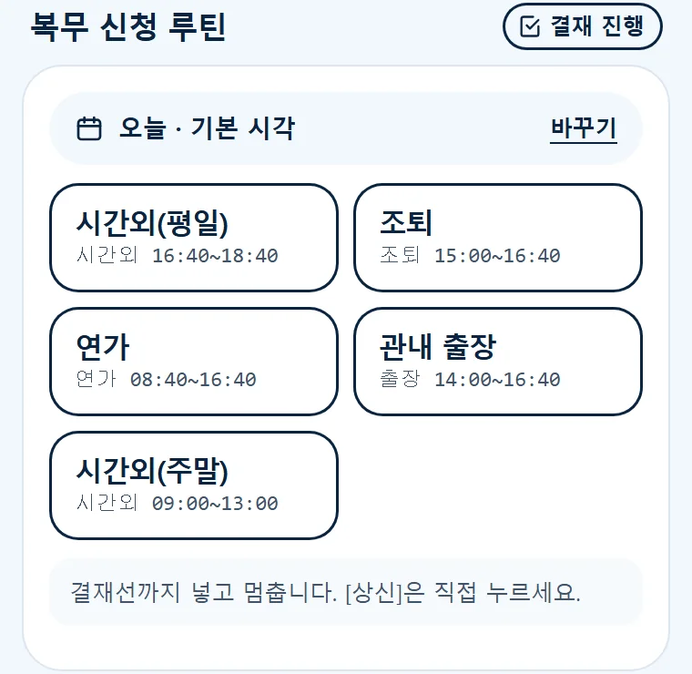
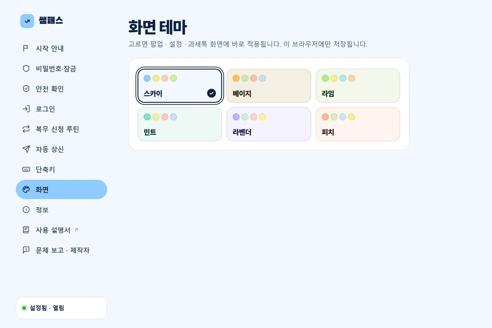
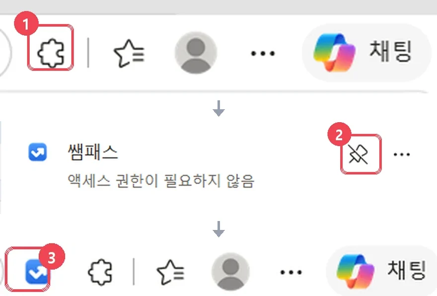
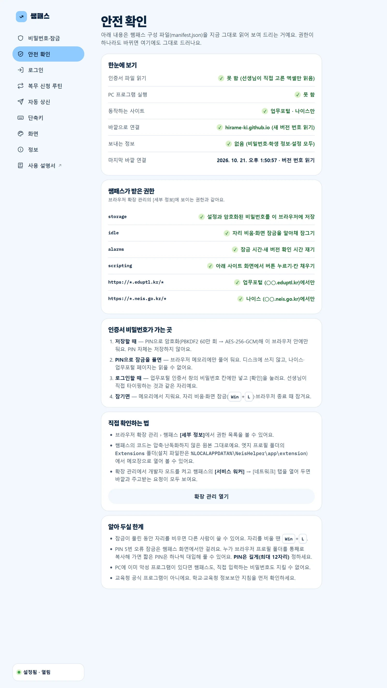

로그인부터 결재선까지,
버튼 한 번에 통과
아침마다 누르던 인증서 로그인, 매번 같은 시간외근무·조퇴 신청, 엑셀에서 옮겨 적던 과세특까지. 쌤패스가 대신 눌러 두고, 마지막 확인만 선생님이 해요.
평소클릭 0번
- 1업무포털 접속
- 2인증서 로그인 버튼
- 3인증서 고르기
- 4비밀번호 입력 · 확인
- 5나이스 메뉴
- 6복무 › 개인근무상황관리
- 7[신청]
- 8근무상황 · 시각 · 사유
- 9[승인요청]
- 10[개인결재선] 고르기 · [지정]
쌤패스클릭 1번

매일 하던 클릭,
쌤패스가 먼저 해 둘게요
모두 선생님 브라우저 안에서, 선생님이 보는 앞에서 동작해요. 아래 화면은 실제 프로그램 화면입니다. (이름·내용은 예시)
PIN 한 번 풀고,
필요한 화면은 버튼 하나로
인증서 비밀번호는 이 PC에만 암호화해 두고, 아침에 PIN으로 잠금을 풀면 팝업 맨 위 바로 열기에서 [업무포털] · [K-에듀파인] · [나이스] · [과세특 입력]을 눌러요. 인증서 로그인부터 그 화면까지 이어서 열어 줘요.
- 업무포털 창이 없으면 주소부터 열고, 이미 로그인돼 있으면 그 단계는 건너뛰어요
- "업무포털을 열면 자동 로그인"을 켜면 열기만 해도 로그인
- 비밀번호가 틀리면 다시 시도하지 않고 멈춰요 (인증서 잠김 방지)

로그인부터 결재선까지,
복무 신청도 버튼 하나로
시각·사유·개인결재선을 버튼에 저장해 두면, 누를 때 업무포털 로그인 → 나이스 열기 → 신청 창 → 결재선 지정까지 이어서 해요. 내용을 보고 [상신]은 직접 눌러요.
- 시간외근무 · 연가 · 조퇴 · 외출 · 지각 · 병조퇴 · 출장
- 이미 로그인돼 있거나 나이스가 열려 있으면 그 단계는 건너뛰어요
- 날짜 · 그날만 다른 시각 · 끝나는 날(연가 · 출장)은 팝업에서 바로 바꾸기
- Alt+Shift+1처럼 단축키로도 실행

쓰던 엑셀 그대로,
과세특 칸에 옮겨 적어요
엑셀 양식이 달라도 학년·반·번호·이름·내용 열을 스스로 찾아요. 나이스에서 강의실을 조회하면 명단을 맞추고, 맞는 학생만 넣어요.
- 반 · 번호 · 이름이 모두 맞아야 입력 (한 줄 밀림 방지)
- 학생별 남은 바이트 · 이모지 · 이미 쓴 내용 미리 검사
- 누르면 로그인 → 나이스 → 과세특 화면(OTP 창)까지 자동
- OTP와 [저장]은 직접, 저장되면 다음 강의실로 이어서

편한 만큼,
잠금은 꼼꼼하게
비밀번호는 PIN으로 암호화해 이 브라우저 안에만 둬요. 잠금 방식은 직접 고를 수 있어요.
- 기본: 자리를 비운 시간·최대 유지 시간이 지나면 잠금
- 선택: PC 화면을 잠글 때(Win+L)만 잠금 — 동의 후 켜기
- PIN 5번 틀리면 잠시 입력 차단

사용 설명서
툴바의 쌤패스 아이콘(또는 Alt+Shift+N) → 오른쪽 위 [설정]을 누르면 설정 화면이 열려요. 화면 사진이 더 많은 전체 사용 설명서(노션) ↗도 있어요. 처음이라면 실제 화면으로 따라 보는 사용법 영상부터 보세요.
처음 설정: 비밀번호와 PIN
- 설정 › 비밀번호·잠금에서 인증서 비밀번호를 두 번 넣어요.
- 잠금을 풀 때 쓸 PIN(숫자 6~12자리)을 정해요.
- [저장]하고 툴바 아이콘에서 PIN으로 잠금을 풀면 준비 끝.
- "언제 잠글까요?"에서 잠금 방식을 고를 수 있어요.

바로 열기
- 팝업 맨 위 바로 열기의 [업무포털]을 누르면 업무포털을 열고 인증서 로그인까지 해요.
- [K-에듀파인] · [나이스]는 업무포털 로그인부터 그 화면까지, [과세특 입력]은 과세특 메뉴(OTP 창)까지 이어서 열어요. 이미 된 단계는 건너뛰어요.
- 설정 › 로그인의 스위치를 켜면 업무포털을 열기만 해도 로그인해요.
- 다른 시도교육청은 업무포털 주소를 바꿔 주세요.

복무 신청 루틴
- 나이스 ⚙개인설정 › 업무승인자관리 › 개인결재선관리에서 결재선을 먼저 만들어요. (설정의 [등록 방법]에 순서 사진이 있어요)
- 설정 › 복무 신청 루틴 › [+ 버튼 추가]: 종류(시간외근무 · 연가 · 조퇴 등 · 출장) · 시각 · 사유 · 결재선 이름
- 팝업의 버튼을 누르면 업무포털 로그인 → 나이스 열기 → 결재선 지정까지 이어서 해요. 이미 된 단계는 건너뛰어요.
- 날짜 · 시각 · 끝나는 날(연가 · 출장)은 팝업의 "바꾸기"에서 그날만 바꿔요.
- 나이스 화면에서 확인하고 [상신]은 직접.

과세특 엑셀 입력
- 팝업 › 바로 열기 › [과세특 입력] — 업무포털 로그인 → 나이스 → 과세특 메뉴까지 알아서 열려요(된 단계는 건너뜀)
- 나이스에서 OTP 입력 → 쌤패스 과세특 탭으로 돌아와 엑셀 파일 불러오기
- "이렇게 이해했어요"에서 열이 맞는지 확인 (틀리면 바꾸기)
- 나이스에서 학기·과목·강의실을 고르고 [조회]
- 맞추기 표를 보고 [입력 시작] — 이미 내용이 있는 학생은 체크해야 바꿔요
- 나이스에서 확인 후 [저장] → 다음 강의실을 조회하면 이어서

자동 상신 (선택)
- 기본은 꺼짐 — 결재선까지 넣고 멈춰요.
- 켜려면 수당·책임 안내를 읽고 동의해야 해요.
- 켜면 복무 신청 루틴 버튼 · 단축키 모두 [상신]과 그 뒤 나이스 확인 창까지 눌러요.

단축키
- Alt+Shift+N 팝업 열기
- Alt+Shift+L 업무포털 로그인
- Alt+Shift+1~2 복무 신청 루틴 1·2번 (오늘 날짜, 로그인부터)
- [단축키 바꾸기]에서 3~6번 · K-에듀파인 · 나이스도 지정할 수 있어요.

화면 테마
- 설정 › 화면에서 6가지 색 중 하나를 골라요: 스카이(기본) · 베이지 · 라임 · 민트 · 라벤더 · 피치.
- 고르는 즉시 팝업 · 설정 · 과세특 화면에 함께 바뀌어요. 열려 있는 창도 바로 따라 바뀌어요.
- 고른 테마는 이 브라우저에만 저장돼요.

정보 · 업데이트
- 새 버전은 스토어가 자동으로 설치해요. 선생님이 할 일은 없어요.
- 새 버전은 엣지 확장 스토어·크롬 웹 스토어의 심사를 거친 뒤에 배포돼요.
- 설정 › 정보에서 지금 쓰는 버전을 볼 수 있어요. 바뀐 점은 이 페이지의 업데이트 기록에 있어요.

3단계면 바로 시작
엣지는 엣지 확장 스토어, 크롬은 크롬 웹 스토어에서 받아요. 관리자 권한도, 설치 파일도 필요 없어요.
툴바에 고정
주소창 오른쪽, 즐겨찾기(☆) 왼쪽의 확장 아이콘을 눌러요. 목록의 쌤패스 줄 오른쪽 핀(압정) 아이콘을 누르면 툴바에 쌤패스 아이콘이 생겨요. 이제 툴바에서 바로 열 수 있어요.

비밀번호 · PIN 저장
쌤패스 아이콘 → [설정] › 비밀번호·잠금에서 인증서 비밀번호와 PIN을 저장하면 끝.
처음 받으면 설정의 시작 안내가 저절로 열려요. 그 순서대로 따라 해도 돼요.
다른 시도교육청이면 설정 › 로그인에서 업무포털 주소를 바꿔요.

선생님 정보는
선생님 PC에만
말로만 말고,
쌤패스 안에서 확인하세요
설정 › 안전 확인은 쌤패스 구성 파일(manifest.json)을 그 자리에서 읽어 보여 줘요. 권한이 하나라도 바뀌면 그대로 드러나요. 팝업 맨 아래 초록 표시를 눌러도 열려요.
- 인증서 파일 읽기 · PC 프로그램 실행: 권한 없음
- 동작하는 사이트: 업무포털(○○.eduptl.kr) · 나이스(○○.neis.go.kr)만
- 인증서 비밀번호는 업무포털 인증서 창의 비밀번호 칸에만 넣어요. 직접 타이핑하는 것과 같은 자리예요.
- 쌤패스의 코드는 압축·난독화하지 않은 원본 그대로라 누구나 열어 볼 수 있어요.

- 잠금이 풀린 동안 자리를 비우면 다른 사람이 쓸 수 있어요. 자리를 비울 땐 Win+L.
- PIN 5번 오류 잠금은 쌤패스 화면에서만 걸려요. 누가 브라우저 프로필 폴더를 통째로 복사해 가면 짧은 PIN은 대입해서 풀 수 있어요. PIN은 길게(최대 12자리) 정하세요.
- PC에 이미 악성 프로그램이 있다면 쌤패스도, 직접 입력하는 비밀번호도 지킬 수 없어요.
자주 묻는 질문
교육청에서 만든 공식 프로그램인가요?
인증서 비밀번호를 저장해도 안전한가요?
[상신]까지 자동으로 할 수는 없나요?
스토어에서 받는 게 안전한가요?
크롬에서도 되나요?
다른 시도교육청에서도 되나요?
○○.eduptl.kr 형태라면 설정 › 로그인에서 주소만 바꾸면 돼요. 처음 만든 곳은 경기도라, 다른 지역은 화면이 조금 달라 일부 기능이 다를 수 있어요.엑셀 양식이 사람마다 다른데 괜찮나요?
업데이트는 어떻게 하나요?
맥(Mac)이나 휴대폰에서도 쓸 수 있나요?
지우고 싶어요.
edge://extensions·chrome://extensions → 쌤패스 [제거]) 저장한 비밀번호와 설정도 함께 지워져요.정말 무료인가요?
업데이트 기록
불러오는 중…